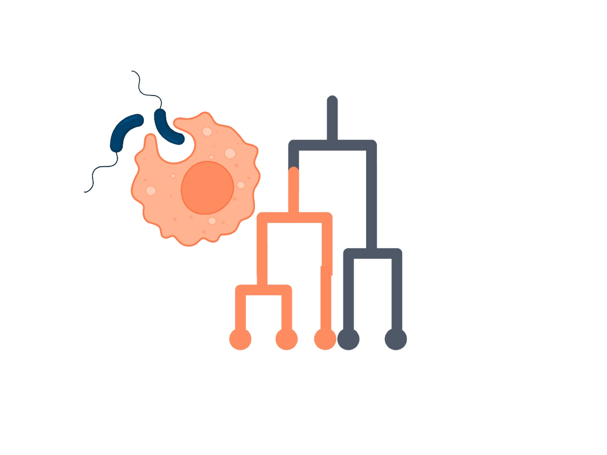

Evolution & genetics of inflammatory conditions
Understanding how pathogen-driven selection shaped modern inflammatory conditions, and which risk variants remain functional in immune cells.
Read more →EvolBioMed · Saint Petersburg · Tartu
We are the EvolBioMed group in evolutionary immunogenetics and human population genetics, led by Bayazit Yunusbayev. We study how natural selection and the evolutionary history of modern humans shaped immune phenotypes, autoimmune disease risk, and genetic susceptibility to tuberculosis — including the gut microbiome during tuberculosis chemotherapy.
Our team spans research groups at the University of Tartu in Estonia (people at cGEM) and Saint Petersburg State University in Russia, in collaboration with researchers at ITMO University in Saint Petersburg and Bashkir State Medical University in Ufa.

Three connected questions drive the group: how selection acting on immune genes shaped present-day disease risk, how human demographic history structured genetic variation, and which host and microbial factors determine the outcome of tuberculosis infection.
Understanding how pathogen-driven selection shaped modern inflammatory conditions, and which risk variants remain functional in immune cells.
Read more →Understanding neutral and adaptive evolution of modern human populations, including rare-variant history and ancestry reconstruction.
Read more →Focus on the host: genetic susceptibility to tuberculosis, treatment outcome, and the gut microbiome and resistome during chemotherapy.
Read more →Department of Genetics and Biotechnology — the oldest department of genetics in Russia.
Collaboration with the Centre for Genomics, Evolution and Medicine (cGEM) and the Institute of Genomics / Estonian Biobank.
ITMO University (SCAMT Institute), Saint Petersburg; Bashkir State Medical University, Ufa.
Get in touch. For collaborations, data requests or student positions, write to yunusbb@gmail.com. Dataset accessions and dissemination material are listed on the Resources page.